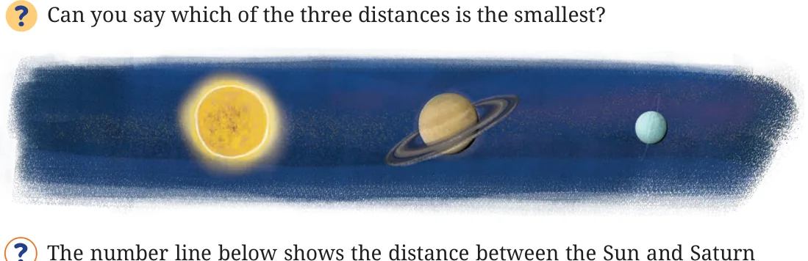

Let’s look at some facts involving large numbers -
- The Sun is located 30,00,00,00,00,00,00,00,00,000 m from the centre of our Milky Way galaxy.
- The number of stars in our galaxy is 1,00,00,00,00,000.
- The mass of the Earth is 59,76,00,00,00,00,00,00,00,00,00,000 kg.
As the number of digits increases, it becomes difficult to read the numbers correctly. We may miscount the number of zeroes or place commas incorrectly. We will then read the wrong value. It is like getting ₹5,000 when you were supposed to get ₹50,000. The number of zeroes is more important than the initial digits in several cases. Can we use the exponential notation to simplify and read these very large numbers correctly? For example, the number 5900 can be expressed as -
\(5900 = 590 \times 10 = 590 \times 10^1\)
\(= 59 \times 100 = 59 \times 10^2\)
\(= 5.9 \times 1000 = 5.9 \times 10^3\)
\(= 0.59 \times 10000 = 0.59 \times 10^4\).
Any number can be written as the product of a number between 1 and 10 and a power of 10. For example,
\(5900 = 5.9 \times 10^3\) \(20800 = 2.08 \times 10^4\) \(80{,}00{,}000 = 8 \times 10^6\)
Write the large-number facts we read just before in this form. In scientific notation or scientific form (also called standard form),
we write numbers as \(x \times 10^y\), where \(x \ge 1\) and \(x < 10\) is the coefficient and y, the exponent, is any integer. Often, the exponent y is more important than the coefficient x. When we write the 2 crore population of Mumbai as \(2 \times 10^7\), the 7 is more important than the 2. Indeed, if the 2 is changed to 3, the population increases by one-half, i.e., 2 crore to 3 crore, whereas if the 7 is changed to 8, the change in population is 10 times, i.e., 2 crores to 20 crores. Therefore, the standard form explicitly mentions the exponent, which indicates the number of digits.
If we say that the population of Kohima is 1,42,395, then it gives the impression that we are quite sure about this number up to the units place. When we use large numbers, in most cases, we are more concerned about how big a quantity or measure is, rather than the exact value. If we are only sure that the population is around 1 lakh 42 thousand, we can write it as \(1.42 \times 10^5\). If we can only be certain that it is around 1 lakh 40 thousand, we write it as \(1.4 \times 10^5\). The number of digits in the coefficient reflects how well we know the number. The most important part of any

number written in scientific form is the exponent, and then the first digit of the coefficient. The digits following the coefficient are small corrections to the first digit.
These values are rounded-off estimates, averages, or approximations; most of the time, they serve the purpose at hand. The distance between the Sun and Saturn is 14,33,50,00,00,000 m
\(= 1.4335 \times 10^{12}\) m.
The distance between Saturn and Uranus is 14,39,00,00,00,000 m \(= 1.439 \times 10^{12}\) m.
The distance between the Sun and Earth is
\(1{,}49{,}60{,}00{,}00{,}000 \text{ m} = 1.496 \times 10^{11}\) m.

The distance between the Sun and Saturn is \(1.4335 \times 10^{12}\) m. On the number line below, mark the relative position of the Earth. The distance between the Sun and the Earth is \(1.496 \times 10^{11}\) m.
Express the following numbers in standard form.
- 59,853 (ii) 65,950
- 34,30,000 (iv) 70,04,00,00,000